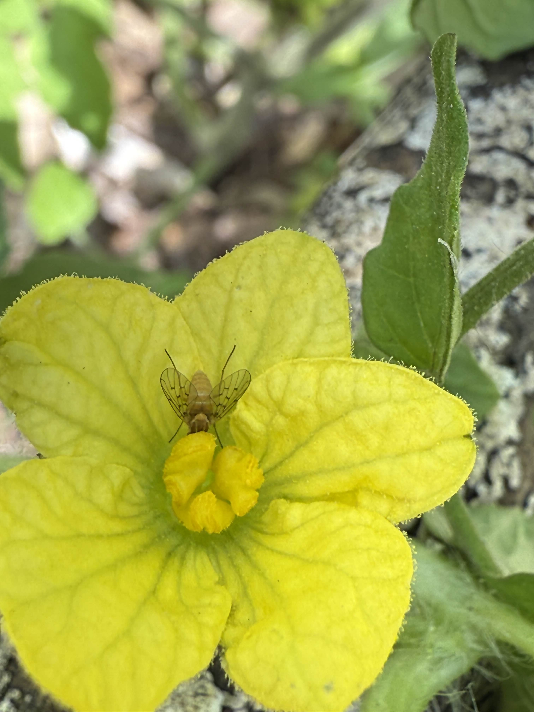

Here's a few ideas to get started!

Sustainable Farming
Learn More about Sustainable Farming.

Soil Health
The most important part of agriculture, soil health is a foundational step in order to have a healthy ecosystem.

Composting
Methods for hot or cold composting organic material into nutrient rich soil.

Nutrients
Types of Nutrients and minerals plants need to survive depending on their life stage.